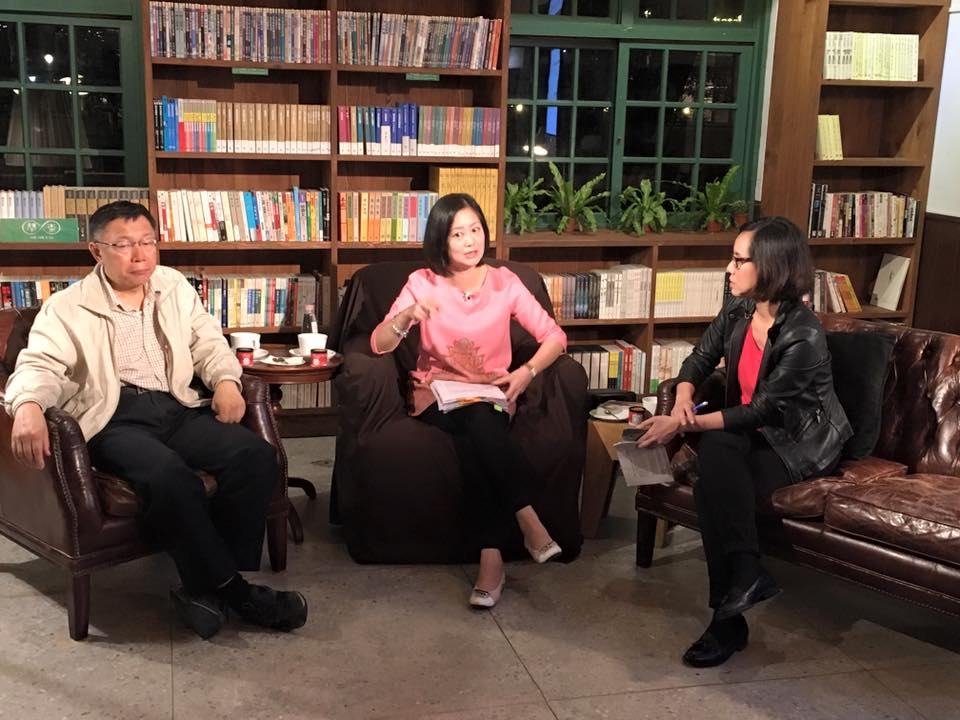

在台灣民主不到三十年的歷史當中，吳思瑤是少數從政策幕僚到民意代表，累積了二十多年經驗的中生代政治人物。吳思瑤與年齡不相襯的深厚從政資歷，正好和柯 P 相映成趣，這對「最年輕的老將」和「最年長的菜鳥」之間，會激盪出什麼火花呢？
開場前先複習一下會前專訪：
柯文哲夜問新國會系列專訪》民進黨立委參選人吳思瑤：進入國會立刻與柯市府聯手推動參與式預算、i-Voting 延續著開場前的「正妹議員」話題，主持人先請吳思瑤談談性別的影響。吳思瑤坦承，在台灣社會，大家比較信任女性政治人物，外表乾淨當然也會加分。但回首剛出道時「美女刺客」的媒體封號，吳思瑤其實很不喜歡大家把女人物化，只在外表上做文章。雖然從年輕時政壇長輩就不斷勸進，但她總是希望多累積歷練和專業，也希望大家多注意她的問政能力。畢竟正妹會變正姊，專業卻會不斷累積。這時候柯Ｐ冷不防指著吳思瑤的照片說：「不會啦還是正妹」，吳思瑤一通高興，直呼柯Ｐ嘴巴太甜。
回想起剛認識吳思瑤的場景，柯Ｐ說原本是去選前去跟民進黨議員打招呼，沒想到被吳思瑤抓著上了兩個小時的課，從台北市文化政策談到城市博物館。豐富的講義和簡報，顛覆了柯Ｐ的成見：「本來以為議員就是哈啦哈啦的，沒想到這傢伙這麼有深度」。吳思瑤打趣著叫他小心不要講錯話，順帶糾正了一下是「這個正妹」。後來在府會合作的溝通過程中，柯Ｐ對他條理分明、思路清晰的腦袋越發印象深刻。
吳思瑤歷經了三任市長，柯市府和過去的馬郝有什麼不同呢？吳思瑤認為「跟柯Ｐ講話很痛快」，該做的事情不會猶疑，非常阿莎力，跟大頭斌（指郝龍斌）時代截然不同。像郝龍斌這樣的傳統政治人物，往往打安全牌，就算心裡同意，嘴巴上還是託推再研議，研議著時機就過去了。柯Ｐ的這份爽快，連國民黨的議員也覺得很好，但相對地，柯Ｐ素人出身，畢竟不了解府會互動的眉角，常常會踩到紅線。
但柯Ｐ終究學習快，府內的其他素人官員有時候就難免出包。吳思瑤舉知名建築師林洲民為例，他雖然有很多浪漫的理想，但是卻拿 1881 萬的先期規劃預算，包夾兩百七十多億的公宅建設經費，「雖然不是要做壞事，但就是因為不了解預算編列的程序和規範，才會害得柯Ｐ也要跟著道歉。」柯Ｐ也附和說，已經有交代主計長，以後發現不對要舉手（提醒），不要讓明擺著有錯的東西出市府。吳思瑤馬上自告奮勇，認為柯市長在休會期間，應該安排官員學習府會互動、行政運作、預算編列的遊戲規則：「我很樂意來當老師」。
除了阿莎力，錯了就改這一點也讓吳思瑤覺得非常痛快。公宅預算有問題，勘誤表馬上就送過來了。不然預算不過，公宅又要停擺一年。
除了阿莎力，錯了就改這一點也讓吳思瑤覺得非常痛快。公宅預算有問題，勘誤表馬上就送過來了。不然預算不過，公宅又要停擺一年。 吳思瑤在專訪中曾經提到，對柯文哲現象有些疑慮，是怎麼個憂慮法呢？吳思瑤先是讚揚柯Ｐ打開素人參政的想像和可能性，話鋒一轉，吳思瑤也坦誠自己擔心網路上的意見領袖，會像過去的名嘴那樣引導民意，讓人民覺得事情就是這樣而已了。所以她期許柯Ｐ能讓公民參與和討論更細膩、更有深度。柯Ｐ則一派輕鬆地認為，只要認清網路之外還有現實世界，這問題沒那麼嚴重。主持人則回應，網路固然難免有意見領袖，但互動、開放的網路平台，能激發出更多討論，倒不用那麼擔心。
談起柯Ｐ以反省為主題的週年回顧影片，吳思瑤大讚這就是新政治與舊政治的不同。同一天朱立倫在造勢晚會上，大談自己搞了多少全國性創新，擺出由上對下、君恩隆重的姿態。柯文哲卻是在認真反省自己，這份率真，就是柯Ｐ之所以是柯Ｐ的理由。吳思瑤看到影片也很震撼，覺得自己要多反省。柯Ｐ倒是幫腔，說吳思瑤很少犯錯。
既然要反省，那就來談談波卡事件吧。吳思瑤終於逮到機會平反，喜形於色。為什麼議員要討波卡？為的是問政時手上需要有個東西。吳思瑤舉當年盯市府文宣預算的例子，為了呈現文宣的冗贅，她特地蒐集了各局處印製的大量手冊、文宣。堆積如山的文宣，郝龍斌看了也是大吃一驚。
討波卡也是基於一樣的理由。她接著拿出公文（時任悠遊卡公司董事長戴季全說：她是唯一正式行文討波卡，「留下把柄」的議員），說當時會討 20 張，也是辦公室同仁考量到她是黨團總召，到時候開會討論會需要比較多份樣本，所以才會多討一點，要趕在銷毀之前「留存證據」。第二天沒有要銷毀之後，因為沒有留存證據的必要了，就馬上再去公文取消索討。她從頭到尾沒看過波卡，討過但也取消了，可是悠遊卡公司公布的索討名單，卻還是把她的名字放上去了。
吳思瑤因為有行政幕僚背景，做事向來一板一眼，索討問政資料都是公文往返。沒想到因為悠遊卡公司公佈的名單搞烏龍，波卡居然成為選舉對手的攻擊焦點，她也是始料未及，只嘆自己「又傻又天真」。
當選議員之後，馬上再度投入選舉，當然免不了質疑。吳思瑤說接連選舉，自己其實體力有點吃不消。但是 25 年來，士林北投一直是丁守中靠著藍綠結構在躺著選，從她國一的時候當立委當到現在（「國一的時候」戳到了柯Ｐ的點，讓這位阿伯在旁邊自言自語、樂不可支）。所以她很積極在幫蔡英文主席物色強棒，希望能翻轉選情。包括謝長廷、李應元，都是她奔走遊說的對象。但是遊說未果，黨中央只好就現任議員做民調，這才決定要徵召她。
說道，要徵召的時候，小英就把她叫去：「你要出來承擔。我知道你會被罵，因為人家會說你帶職參選，可是你為了民進黨就是要擔」。吳思瑤說，去年才剛選完，又要再去跟朋友募款，實在很不好意思，但是也只能厚著臉皮承擔。吳思瑤也期許自己做出不一樣的政治，不要像那些躺著選的人，好吃好睡。
說到躺著選，我們統計了一下，台北市的七席現任國民黨立委，總計年資竟然有 99 年，顯然版結很深。柯Ｐ認為這正說明打破藍綠的重要性，照理說台北市是台灣最進步的城市，應該變動很快，卻因為藍綠結構使得流動停滯。柯Ｐ希望 2014 年的經驗，能帶動新的風潮，讓候選人的特質、政見，能超越藍綠結構，成為選民的核心話題。柯Ｐ接著說，年度代表字從「假」、「黑」到「換」，正代表了民心思變，也許這次有機會翻轉一下。
終於到了網友念茲在茲的政策單元。柯Ｐ單刀直入談起北投纜車，問吳思瑤「妳為什麼沒有被收買？」的確絕大多數的議員都是支持北纜，但吳思瑤請大家回顧一下，北纜政策的背景是 1979 年北投廢娼的時候，作為替代產業被提出來的。但從貓纜的例子可以看到，纜車不但不是金雞母，還是賠錢貨，每年虧損一億，帶動產業的效果也沒有出來。
除了經濟考量，吳思瑤堅定反對北纜的另一個理由是「北投太美了」，有好山、好水、豐富的人文歷史。但北纜的選址，居然在溫泉博物館和綠色圖書館的正中央，纜車帶來的地質破壞和噪音干擾，這對古蹟都是很大的威脅。兩相權衡之下，吳思瑤認為保住好山好水，才是地方發展的正道。回想起當時北纜在黑箱環評之下有條件通過，吳思瑤一路哭著開車回家，心中萬般不捨。咬緊牙關繼續為環境、為土地奮戰，熬了十年，才終於等到柯Ｐ拍板喊卡，北纜算是擋下來了。
柯Ｐ戲稱自己沒有吳那麼偉大，單純是看到貓纜的前車之鑑，擔心北投的硫磺氣會讓維修營運更加困難，「正所謂賠錢生意沒人做，明明會虧還要做」，業者一定是在打陽明山的主意，要接著後續開發。所以他就挑明了說陽明山是保護區不讓開發，業者自然知難而退。
吳思瑤接著談起生態博物園區，細數北投公園周遭就有 13 個市定古蹟、八個美術館。他希望把北投各地的文化拼圖給整合起來，透過公民參與，讓在地的好山好水好人文能串連起來，成為台北輕旅行的好去處。吳思瑤希望這個從法國發起，顛覆傳統的新型態博物館概念，能為台北帶來不一樣的面貌，而北投正是最適合落實這個概念的地方。為了落實這個願景，北纜當然一定要反。
名詞解釋：生態博物館
吳思瑤回顧過去這十年，自己反對北纜、要回新北投車站、保育北投溪和北投石、推動生態博物園區的過程中，總是沒有來自國會的支持。等到進了國會，她也希望能和柯Ｐ合作，發展國家級的整體規劃。這個嶄新的概念，需要文化部的支持和公民參與，才能讓常民的文化和生活，透過博物園區展現風華。 柯Ｐ也表示，從聽到這個概念之後他已經想了很久，他覺得這件事是應該做。把博物館散在日常生活當中，讓地方的公民來參與，古蹟保存的狀況反而會更好。
吳思瑤接著講到念茲在茲的復興崗政戰學校校地。足足 40 公頃的校地，有 17 個帝寶那麼大，只有一千多個學生在使用。伴隨著國防精簡、戰備用地需求下降，是不是可以協調國防部釋出部分校地呢？吳思瑤一直在盤算這件事情，也提出無償撥用、容積調派、共同開發等等可能性。但就是卡在丁守中是個軍系立委，不可能代表士林北投做這件事情，所以她很希望能進到國會，直接跟中央協調這件事情。
希望拿那塊地做什麼呢？吳思瑤提出了四加一的方案，四就是社會住宅、公園綠地、長照中心、生技醫療研發中心，一則是原有政戰校地的精實使用。她希望能結合北投在地的醫療資源，滿足在地人民的需求。但她提出這些方案只是參考，更希望透過在地公民討論和參與，開創出更多可能性。
柯Ｐ也認為，校地使用的效率的確需要檢討，國防部如果真的需要用那麼多地，也要給個理由。否則「又不是野生動物園，一千個人要那麼大的空間幹什麼？」他也希望國防部能放下本位主義，釋出至少部分的校地，讓北投更有發展的空間。
除了復興崗校地，吳思瑤進到國會之後，還想進一步落實中興眷村的文化保留及活化，規劃青創基地和藝術進駐。為了落實這些舊眷舍的保存與活化，這些年來，她都得要找其他立委比方管碧玲、鄭麗君，去跟國防部打交道。她希望大家能讓吳思瑤這個在地的立委，來協助落實這個願景，讓獨步全台的溫泉眷村，成為新的地方旅遊亮點。
另外，有網友提問在北投規劃性交易專區的可能性。面對網友提問，吳思瑤說 1979 年北投廢娼，其實也是大家覺得要轉換。雖然台北市文化局長倪重華對於溫泉鄉與溫柔鄉的產業結合發展很有興趣，但性交易專區的問題不一定要聚焦在北投。要不要規劃性產業專區？哪裡適合？還是要交給公民討論來決定。柯文哲表示，這種遊憩專區一般是在比較偏僻的地方，北投本身就有豐富的歷史文化可以發展旅遊產業，不必靠性產業也可以賺錢。
還有網友叫吳思瑤有機會也要關心一下關渡，吳思瑤馬上說起台北鳥會經營的關渡自然保留區，是生態調節、環境教育的最佳基地。她也長期協助關渡公園，邀請更多人來賞鳥、親近自然。吳思瑤接著分享自己在日本參加大地藝術祭，看到藝術活化破敗農村的經驗。她希望台北也能有自己的大地藝術季，而最好的地點，就在河兩岸的關渡和社子島。今年邁入第十年的關渡裝置藝術展，就已經開始做出這樣跨河呼應的嘗試。
話題轉到中央的國會改革，吳思瑤非常希望能發展委員會資深制。擔任國會助理的經歷，讓她清楚看到許多民代逐議題而居的淺薄。她希望能透過制度設計，鼓勵委員待在某個委員會當中深耕，讓問政更專業、提升議事效率。
另外就是有許多人質疑的黨團協商，吳思瑤也希望能打開過去只有結論、沒有過程的黑箱，讓國會的各級會議都能更加公開、透明，讓人民監督。過去從委員會出來的法案，送進黨團協商之後變得面目全非。吳思瑤希望能用委員會資深制以及委員會中心主義，來取代過去圍繞著黨團協商的權力運作模式。柯Ｐ在旁頻頻點頭，稱讚吳思瑤待過國會講話比較有內容。
因為有跟在水牛伯（游錫堃）身邊的經驗，我們也請吳思瑤談談在台灣執政者的難處。吳思瑤談到自己當時就是負責行政和立法的溝通，常常要陪劉世芳秘書長去找關鍵票數的無黨籍立委泡茶，最常去拜託的就是顏清標。如果國會過半，改革就比較容易一條鞭地進行。
過去農漁會都是國民黨綁樁的工具，核貸靠人情，財務體質就不好。所以民進黨推農漁會和基層銀行的改革，要讓信用部分級、打消呆帳。但這麼重要的改革，也因為國會不過半，被國民黨卡死，到最後只能做一半。柯Ｐ也主張國會的翻轉有其必要，不然黨產問題沒有辦法解決，連程序委員會都排不進去。
時間快要不夠用了，主持人趕緊把網友召喚出來。有網友認為吳思瑤跟網民有些距離，她也坦誠自己真的還在學。柯Ｐ倒是說得簡單，叫吳思瑤多跟年輕人聊聊天，讓助理知道自己的想法，他們自己就會去做了。
還有其他的修法主張，比方公民權下修到 18 歲、公投法高到離譜的門檻、選罷法對罷免的層層制肘，這些都是她覺得一定要處理的問題。柯Ｐ也附和，尤其是不准宣傳罷免的規定，根本就太荒謬。
最後話題帶到直接民主、I-Voting 等等的問題，吳思瑤肯定柯Ｐ開創具體的公民參與制度，但現行的制度的確有些問題。比方讓研考會審核提案，這就有點鳥籠的味道，好事只做一半。她將來到國會尤其要致力的是，要讓公共工程也納入公民參與的範圍。希望將來能在中央和台北市呼應，建立更完善、真正具有強制力的公民參與制度。
柯文哲最後也期許，首都改革陣線的候選人們，應該要能談清楚這場選舉對這個時代的意義。吳思瑤則認為，丁守中代表的就是由上而下的威權式民主，而她則希望能帶領市民，用由下而上的方式來深化民主的參與。